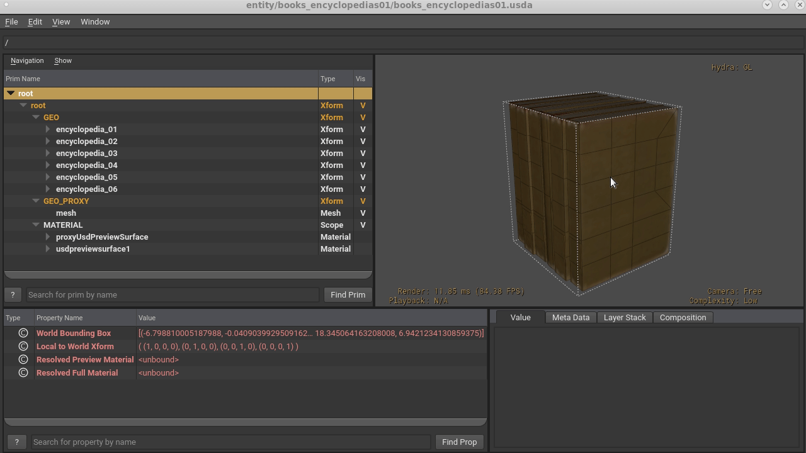
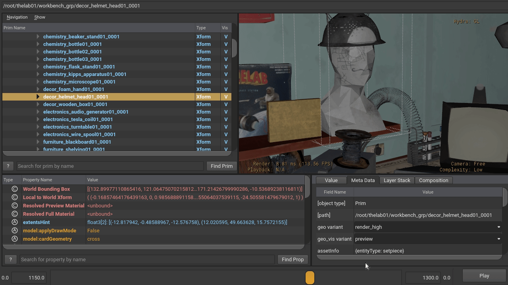
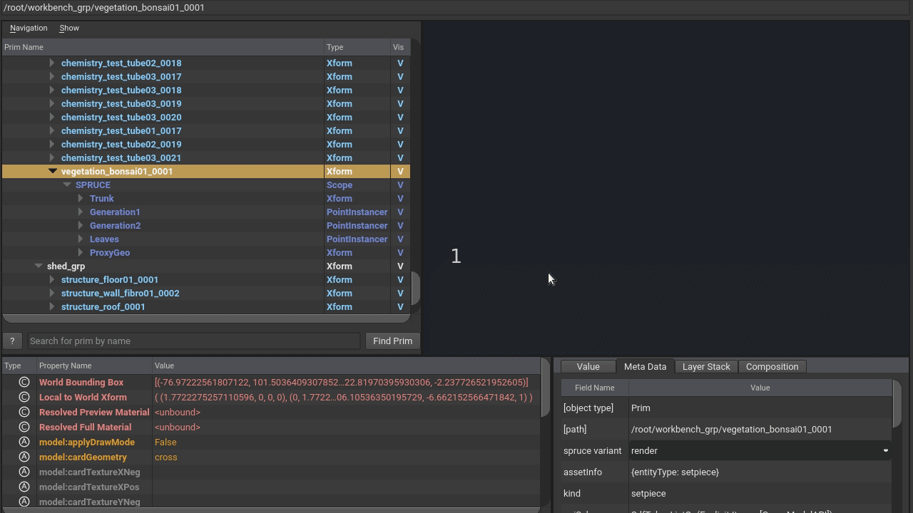

At Animal Logic, we organise files into “Entities & Fragments” Libraries.
Note: If we weren’t using a custom asset resolver internally, we would probably use two PXRARDEFAULTSEARCHPATHs (pointing to /entity and /fragment) to make asset idenitification very simple.
High level production concepts like Characters, Environments and Shots.
“Data Bundles”, such as Geometry (with various representations) or Materials & Textures (Looks).
Layers on the Entities which connect the Fragments to the Entities. Those layers exist for each Pipeline Step (Department).
Fragments allow us to re-use data to reduce duplication of assets. For example, we can create
“surfacing variations” by sharing the same geometry and rig, but using different looks:

We connect Entities to other Entities is via the Assembly and Breakdown Fragments.
For an Environment entity to be populated with “Setpiece” entities, we use Assembly fragments:

At the shot level, the Breakdown fragment brings entities such as Characters, Cameras or Environments.
Other fragments provide shot-specific overrides, for example:
fx.layout.
Internally, we use diagrams such as the one below to describe relationships between the layers. We have many diagrams for various workflows, such as “Matte Painting” or “Crowds”.

Open in a new window for details.
Whilst the terms above could be considered non standard, we note that we’re not aware of an agreed upon industry standard to use in place thereof (ie, even ftrack and ShotGrid use the term “Asset” to describe different concepts).
USD Adoption at Animal Logic initially started in 2017 in animation and was introduced across all departments in 2019.
We started by having versions of our geometry pipeline files encoded in USD (modelling geometry and animation caches),
followed by using USD to represent the “relationships between assets” (introduction of Entities & Fragments pipeline,
then updating lighting with USDLux in a full USD workflow, then shading workflows to USDShade and some of our previously
existing instancing tools with PointInstancers.
Our most recent transition is adopting USDSkel for our crowds, charfx and animation library workflows.
The composition arcs choices have been driven by a balance between our USD knowledge and
how much we can commit to change, always exploring ways of making our pipeline more flexible, robust and capable of meeting
creative requirements from our shows.
This is an overview of some of the USD composition arcs we use in these assets. To walk through the examples,
make sure to be on the main folder where the downloaded assets exist, e.g.:
cd ~/Downloads/USD_ALab
For data which is potentially “heavy”. This data should generally be stored in crate (.usdc) files and
generally does not refer to other files itself.
Usually, we use payloads within the “Fragment” files, for example, for books_encyclopedias01:
usdview fragment/geo/modelling/books_encyclopedias01/geo_modelling_books_encyclopedias01.usda
Scene description data such as “variants”, “extentsHints” or “model kinds” are kept “outside” the payloads so that they are available even when payloads are not loaded.
variantSet "geo" = {
"base" {
float3[] extentsHint = [(-6.79881, -0.040903993, -7.7824764), (7.272438, 18.345064, 6.9421234)]
over "GEO" (
payload = @base/mesh/geo_modelling_books_encyclopedias01_base_mesh_v010.usdc@
)
{
}
}
We split each variant into a different payloaded file since those are usually created at different times in our pipeline (and
some might depend on each other), for example, the display_high payload is created in Houdini once a render_high payload is
published from Maya.
Different workflows require different representations of the same data. We allow different clients to choose
the most appropiate by exposing all possible representations via variant sets.
On the fragment books_encyclopedias01:
usdview fragment/geo/modelling/books_encyclopedias01/geo_modelling_books_encyclopedias01.usda
We can find several variants for the geo variant set:
def Xform "root" (
prepend variantSets = "geo"
)
{
...
variantSet "geo" = {
"base" {
float3[] extentsHint = [(-6.79881, -0.040903993, -7.7824764), (7.272438, 18.345064, 6.9421234)]
over "GEO" (
payload = @base/mesh/geo_modelling_books_encyclopedias01_base_mesh.usdc@
)
{
}
}
"client_model" {
}
...
"render_high" (
variants = {
string geo_vis = "preview"
}
prepend variantSets = "geo_vis"
) {
...
}
Please note how if there are no contents on a variant (e.g. no client_model), the variant exists but it’s empty.
This is due to our transition to USD “requiring” all fragments to be consistent with exposed variant names.
In the future we aim to improve the workflows to author only what is needed, so we would not see empty “client_model” or “muscles” variants unless required.
To know more about our variants in the pipeline, visit the “Variants” section.
References are like payloads, but “always loaded”. We use references to bring “Fragments” into “Domain Layers”.
For example, the Modelling Layer on prop books_encyclopedias01 references a Geo fragment:
usdview entity/books_encyclopedias01/modelling/books_encyclopedias01_modelling.usda
We could have also used sublayers in many cases to achieve simiar results as we usually reference the root prim.
def "root" (
prepend references = @../../../fragment/geo/modelling/books_encyclopedias01/geo_modelling_books_encyclopedias01.usda@
)
This is a scenario where “what arc to use” was driven by a historical technical reason. In this case, our geometry
pipeline I/O required DCCs to refer to a “single root Xform” for the geometry files. Choosing sublayers in this case
would have required our legacy pipeline to be updated to know what to do in case more than 1 root prim was found, which
we were not committing to do.
When more domains started transitioning to USD, most followed the reference approach for the sake of consistency, but
in cases where a sublayer or another arc solved a particular workflow, those changes are embraced (for example, on shots,
our fxcache fragments are sublayered and not referenced).
Sublayers are mainly used in our assets to add domain layers (departments or pipeline steps) to entities,
for example, for entity books_encyclopedias01, we have:
usdview entity/books_encyclopedias01/books_encyclopedias01.usda
subLayers = [
@surfacing/books_encyclopedias01_surfacing.usda@,
@modelling/books_encyclopedias01_modelling.usda@
]
There are cases where we have domains under others. For example, animation domain sublayers animbase and animfxcache domains.
We refer to these as “subdomains”.
We use this arc in a very different way to the other ones and for a very specific reason.
It ensures that the root prim of our entities has a type (Scope), while allowing domains to
override it with a more appropriate type (e.g. Xform by modelling or SkelRoot by rigging for characters with USDSkel) via their referenced fragments.
On the entity books_encyclopedias01:
usdview entity/books_encyclopedias01/books_encyclopedias01.usda
def "root" (
...
prepend specializes = </_root_type>
)
{
}
class Scope "_root_type" (
doc = "This prim holds the 'fallback' type of the default root prim"
)
{
}
We ensure the specialized _root_type prim is a class to let most workflows know they can “ignore it” for their common traversals.
The assets utilize USD purposes to switch between a lower resolution for OpenGL/viewport display and higher resolution for rendering. This means that users should only have to switch the purpose in the delegates’ settings and should not have to switch variants.
Also see the section on “UsdPreviewSurface Materials” below for more information.

The power of USD in our pipeline has allowed us to make departments more parallel than before. Sometimes we can
get animation to start adding performance to a character that has not even started shading work.
This has led to some new workflow requirements: Animation wants to see color as early as possible on the geometry.
We use the displayColor and displayOpacity, authored by the Modelling department in Maya, for this scenario.
Then, when surfacing provides materials, animation automatically picks them up on their scenes.
Each of the published entities (characters, props, environments) exposes variant sets on the default prim. (e.g. geo, geocache, camera, skeleton, alfro, weave)
This allows consumers of those entities (mainly shot departments), to safely make variant selections on those root prims directly.
One nice aspect of variants is that there is a fallback mechanism that can be set programmatically when opening
stages or via a plugin on the environment. We use both on our pipeline and this means we never publish characters, props or
environments with internal variant selections. We always defer those selections to consumers of the entities via the mentioned mechanisms.
Note: We used to have look set with render_high and display_high variants but dropped it since we started authoring both preview and final render opinions on the same “look” asset.
Since this started happening in the middle of a production, the main asset location remained “renderhigh”. So these look fragments contain both “render” and “preview” shaders even though the filenames are “renderhigh”.
All our geometry contributions (mainly coming from the modelling domain), expose different representations of the same data for different consumers.
We provide 2 variant sets: geo and geo_vis:
| Variant | Usage |
|---|---|
| base | All of the geometry (with the exception of blendshapes) that modelling artists author for downstream departments. |
| render_high | This is the main variant used for surfacing and shot departments for high quality final frame rendering. |
| deform_high | This is the variant used by the rigging department to apply deformation to. The output of that deformation gets “merged” on shots with the render_high geo variant |
| display_high | Procedurally created low resolution version of the render_high geometry for fast preview while still retaining overall shape + colors |
| pose | Mainly used by modelling for reviews where the character needs to be in a non-bind pose (e.g. relaxed, with style). This allows for modelling to not have to wait for rigging to see the character with an expressive pose. |
| shapes_high | All blendshapes used by the performance rig, as well as blendshapes for render_high, deform_high, pose variants creation. |
| client_model | When projects have incoming data from external clients, this is where that client version can be found. |
These variants in our pipeline shine with rigged entities (characters, props) and we’re excited to share some examples in the future.
When modelling creates the “base” geometry, they can also provide a “pose” version for it, which will override the “points” property only:
usdview fragment/geo/modelling/books_encyclopedias01/pose/mesh/geo_modelling_books_encyclopedias01_pose_mesh.usdc
This will sublayer the render_high version and override points properties only:
#usda 1.0
(
defaultPrim = "GEO"
subLayers = [
@../../render_high/mesh/geo_modelling_books_encyclopedias01_render_high_mesh.usdc@
]
)
over "GEO"
{
over "encyclopedia_01"
{
over "encyclopedia1_cover_M_geo"
{
point3f[] points = [(-6.766857, -0.01848345, -5.47812), ..., (5.8743553, 18.286024, -5.140335)]
}
over "encyclopedia6_cover_M_geo"
{
point3f[] points = [(-6.6372204, 0.0063685314, 6.9421234), ..., (5.99792, 18.313019, 6.507246)]
}
}
}
This allows workflows to switch to the pose variant while retaining all render_high attributes like pref, displayColor and st.
We use this mainly for situations where we want to preview the entities with a bit of personality with the official geometry and before
rigging and animation have worked on it.
This provides clients flexibility to switch visibility level between the render and proxy purposes on a per entity level.
| Variant | Usage |
|---|---|
| default | Leave the render_high variant as it came from modelling |
| preview | Use the display_high variant as a proxy of the render_high and set purposes appropiately |
For example, an artist on a shot with a big environment might want to see on the viewport the “high res” geometry version of a setpiece to interact with a character.
They can switch that setpiece to geo_vis=default to remove any render & proxy purpose opinions while still being on the render_high variant.

When packaging, we compute extents for all geo fragments. This applies at the shot level as well, so you can have animated extentsHint properties.
This allows for unloaded stages to provide a preview of all bounding boxes on a shot, allowing for processes like frustrum culling.
We payload all heavy data behind fragments as described on the Composition Arcs section.
USD’s composition of multiple opinions onto the same prim is usually desired. For example, a character fx layer might contribute a point attribute on a cloth prim which overrides the point attribute which animation has contributed.
However, on cameras, we decided that we usually don’t want to “blend” opinions from the contributing departments (layout and animation), but prefer to see either one or the other. So cameras provide a “domain variant” which allows the user to switch between the camera cache which has been authored by layout and by animation.
Previously we used in house procedurals for instancing elements of environments (e.g. vegetation in a forest) as well as
instancing elements of the vegetation (e.g. leaves, twigs, branches of trees).
We have updated those workflows to author native USD Point Instancers instead, which still give the
ability of having nested instancing + gives us the benefit of multi DCC support and the rest of the USD composition arcs.
You can find the point instancer under:
usdview fragment/spruce/modelling/vegetation_bonsai01/spruce_modelling_vegetation_bonsai01.usda
Or, with the lab opened, it is on prim at path:
/root/workbench_grp/vegetation_bonsai01_0001
The point instancers come with off and render variants under the variant sets spruce and spawn.

We provide 4 cameras. Usually, they would exist in different shots in our pipeline, but we have referenced them all into the same “hero” shot (ztl01_060) for user convenience. The frame range of the shot is:
The other cameras may have longer or shorter frame ranges, but we have aligned them all to start on 1201 so you can switch easily between them.
The same bonsai entity: vegetation_bonsai01 provides “keep alive” behaviour. This means that it
has a “loopable” animation on the instances which makes it come to life. We achieve this via
value clips in USD. On sprucemodellingvegetationbonsai01base_groom:
usdview fragment/spruce/modelling/vegetation_bonsai01/base/groom/spruce_modelling_vegetation_bonsai01_base_groom/groom.usda
(
...
defaultPrim = "root"
endTimeCode = 100
framesPerSecond = 24
metersPerUnit = 1
startTimeCode = 1
subLayers = [
@clip.usda@,
@payload.usdc@
]
timeCodesPerSecond = 24
)
Which sublayers clip.usda, where we can see the clip data:
over "root" (
clips = {
dictionary default = {
double2[] active = [(1, 0), (100, 0), ..., (5000, 0)]
asset[] assetPaths = [@payload.usdc@]
string primPath = "/root"
double2[] times = [(1, 1), (100, 100), ..., (5000, 51)]
}
...
To learn more about value clips you can visit Pixar’s Docs
A “volume” prim with reference to a open vdb volume simulation of “dry ice” has been included at this path “/root/fx/dryice01/smoke/volume_0”. For now, it is provided “as is” and without material binding. You may wonder why a value clip is used here - it’s primarily due to pipeline conventions - ie, we currently export value clips for all animated shotbased fx (including vdbs) although this may not always be necessary.
Note: In order to see the volume in Storm (usdView), USD needs to be compiled with OpenVDB which is an optional build flag.
At Animal Logic we make heavy use of instancing whenever possible. By default, all entities used on an environment are instanced.
This means if we use the same 7 windows on a city, they all share the same prototype prim. ALab is no exception, these are the top used entities
on it (all of which are instanced):
| Entity | Instance Count |
|---|---|
| chemistrytesttube03 | 21 |
| chemistrytesttube02 | 18 |
| chemistrytesttube01 | 17 |
| chemistry_bottle03 | 10 |
| chemistrybeakerrack01 | 8 |
usdview fragment/assembly/modelling/thelab01/assembly_modelling_thelab01.usda
The key parts are:
1. Entity delivery file is referenced.
2. Prim referencing this entity delivery is marked as instanceable = true.
3. Overrides are applied on the same prim.
def Xform "chemistry_test_tube03_0001" (
instanceable = true
prepend references = @../../../../entity/chemistry_test_tube03/chemistry_test_tube03.usda@
)
{
... # transformation overrides
}
def Xform "chemistry_test_tube03_0002" (
instanceable = true
prepend references = @../../../../entity/chemistry_test_tube03/chemistry_test_tube03.usda@
)
{
... # transformation overrides
}
usdview fragment/look/surfacing/books_encyclopedias01/render_high/binding/look_surfacing_books_encyclopedias01_render_high_binding/render_high.usda
The display purpose utilizes simplified UVs, materials and single channel textures baked from the highres textures to 512x512px jpegs. The UVs and materials are stored in a single USD file and produced by the same pipeline process.
The “render” purpose utilizes the “original” UDIM based UVs and the materials are parameterised with a number of jpeg 2k textures which seem to work well for viewport display. We also provide additional textures / channels for users who would like to setup their own materials.
Textures are ACEScg with an sRGB tone curve applied (OCIO: Utility - Curve - sRGB, or Nuke: standard sRGB tone curve (sRGB (~2.2) in colorspace node)).
The lights in the Vanilla Edition are a loose reconstruction of the much more complex rig in the Animal Logic Edition. Notably, no light filters (such as blockers) are used, and there is no light-linking for now. Currently only RectLights are used, some with shaping cones. The lights are colored using the colorTemperature parameter.
The lights in the Vanilla Edition were targeted at two widely-available renderers. The /root/lightrig prim contains provides two variants to adapt the lights to these renderers. In particular it adjusts the intensity of the lights by a few of orders of magnitude.
default variant)omniverse variant)The omniverse variant also includes a projected map of foliage shadows for the sunlight on the wall.
Note: This release targets USD 20.08. In USD 21.05+, most light parameters now require a input: prefix. FWIW, the next version of Houdini comes with a small tool to upgrade the parameters.
When introducing usdskel in our pipeline, we realised that we needed to change the “root prim” of entities whenever a skeleton is contributed by the rigging layer. In other words, an opinion which is contributed via some complex composition arc (variant within a reference within a sublayer) needed to bring an opinion which was stronger than the local opinion. So we consulted LIVRPS and chose the arc with the weakest strength to set the type. Now, we can just reference a rig fragment into the rig layer of an entity and the root prim will change it’s type to skelRoot.
Entity.usda
def "root" (
prepend apiSchemas = ["GeomModelAPI"]
kind = "component"
prepend specializes = </_root_type>
) {}
class Scope "_root_type" (
doc = "This prim holds the 'fallback' type of the default root prim"
) {}
Rig.usda
def SkelRoot "root"
{
def Scope "RIG"
{
def Skeleton "root_jnt" (
prepend apiSchemas = ["SkelBindingAPI"]
[...]
}
}